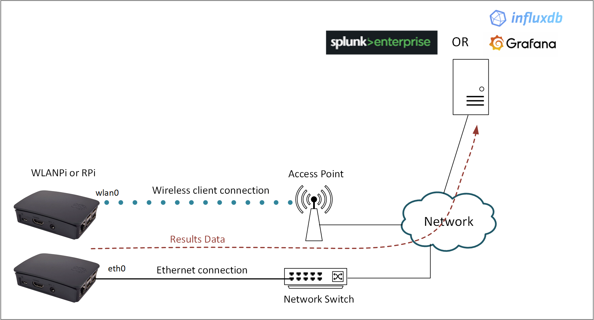
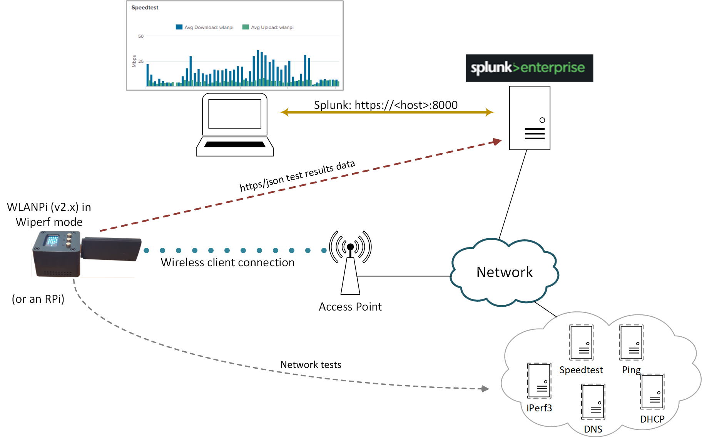
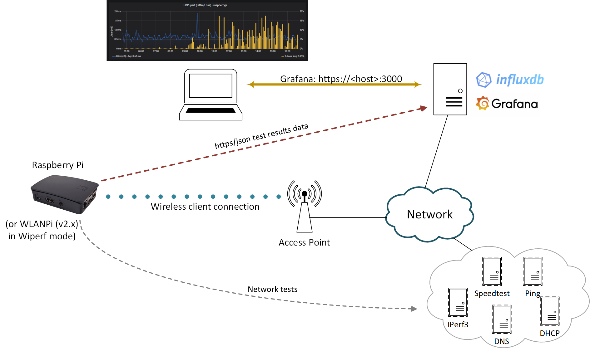

Overview of Operation

Wiperf is an open source utility that runs on a Raspberry Pi or a WLAN Pi hardware device. It provides network probe functionality to gather performance data to give an indication of how a network looks from an end user perspective.
It runs a series of tests to gather metrics on network connectivity and performance through the execution of tests such ICMP pings, DNS lookups and iperf. These are fully configurable by editing a local configuration file on the probe device at the time of deployment.
Configuration
To configure the details of the tests to be run on a probe, a local configuration file on the probe needs to be updated. This will provide information to the probe about items such as the required network connectivity (e.g. wireless/ethernet), IP and credential information of the data server and test details.
The configuration file can be updated by accessing the CLI of the probe (usually via SSH) and editing the file '/etc/wiperf/config.ini'.
A default config template file is provided as a start point for the final configuration file ( '/etc/wiperf/config.default/ini'). It is best to take a copy of this file to create the final customised configuration file. When accessing the probe to create the configuration file, a Linux text editor such as 'nano' or 'vi' should be used.
Here is a suggested workflow to create a probe configuration file:
cd /etc/wiperf
sudo cp ./config.default.ini ./config.ini
sudo nano ./config.ini
cron
(Note: This operation is required for the Raspberry Pi only. The WLAN Pi will automatically setup the required cron job during the mode switch)
In addition to the creating a customised configuration file for the probe, a mechanism is required to run the wiperf utility on a regular basis (e.g. every 5 minutes). Cron is a Linux utility that can be used to run wiperf periodically to gather data over time.
The following CLI commands must be used to add a cron job to the probe to gather data on a regular basis:
sudo crontab -e
Add the following line to run the configured tests every 5 minutes:
0-59/5 * * * * /usr/bin/python3 /usr/share/wiperf/wiperf_run.py > /var/log/wiperf_cron.log 2>&1
wpa_supplicant
If the wiperf probe is to be connected to a wireless network, then details of the wireless network and the credentials to access the network need to be configured on the probe. This is achieved by configuring the following file:
# on the RPi, edit the following file:
sudo nano /etc/wpa_supplicant/wpa_supplicant.conf
# on the WLAN Pi edit the following file:
sudo nano /etc/wiperf/confi/etc/wpa_supplicant/wpa_supplicant.conf
Logging
Following the completion of the configuration described above, if all is configured correctly, then wiperf will run every 5 minutes, perform the configured tests, and then send the data back to the data server.
A number of logs are generated to provide support information around the installation and operation of the wiperf process. Each of the generated log files are detailed below:
# This log provides details of the installation and upgrade processes, so
# can be useful in diagnosing installation issues
/var/log/wiperf_install.log
# This log file is updated by the main wiperf script each time
# it is run. If the script appears to fail completely, this is
# a good place to check
/var/log/wiperg_cron.log
# This log provides details of the tests performed each time
# that wiperf runs. It is the main file to use for diagnosing
# issues with wiperf
/var/log/wiperf_agent.log
Reporting
Gathering the data with a probe is only half of the story when using wiperf. The gathered data must be sent to a data collection server to allow it to be visualized to allow analysis of network performance. The data server must be an instance of either:
- Splunk, or
- InfluxDB with Grafana
Splunk

The graphic above outlines the collection of network performance data and how this is sent to Splunk by the wiperf probe. The Splunk instance may be provided anywhere that is convenient (e.g. on a server locally, via VPN, cloud etc.)
In summary, the steps for data collection are as follows:
- A wiperf probe (i.e. a WLAN Pi or Raspberry Pi) is configured to perform tests and send results to a Splunk server
- The probe performs the configured tests (e.g. speedtest, iperf, http etc.)
- The results of each test are sent over https to the Splunk server for storage and later analysis
- The data is analyzed by accessing the dashboard (a web GUI) of the Splunk server
(Note that the Splunk server acts as both the data repository and reporting platform for collected data)
Grafana/Influx

The graphic above outlines the collection of network performance data and how this is sent to Influx & Grafana by the wiperf probe.
Grafana is a popular open-source data visualization tool. It is used to graph the performance data collected by wiperf. However, Grafana needs a data source from which to pull its network performance data. To meet this requirement, the Influx database server is used. Like Grafana, InfluxDB is also an open-source package. Note this contrasts with using Splunk, which allows us to use the same package to provide both the data storage and analysis/visualization functions.
For small-scale instances, Grafana & Influx may be installed on the same server platform and Grafana configured to use the local instance of Influx as its data source.
Grafana & Influx may be provided anywhere that is convenient (e.g. on a server locally, via VPN, cloud etc.). Note that wiperf only needs to be able to send data to Influx - it requires no communication with the Grafana instance.
In summary, the steps for data collection are as follows:
- A wiperf probe (i.e. a WLAN Pi or Raspberry Pi) is configured to perform tests and send results to a Splunk server
- The probe performs the configured tests (e.g. speedtest, iperf, http etc.)
- The results of each test are sent over https to the Influx server for storage
- Grafana is configured to use Influx as its data source to allow visualization of performance data
- Data is analysed by accessing the dashboard (a web GUI) of the Grafana server, which pull the required dashboard data from Influx.